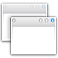

WMIface
Archivierte Anleitung
Dieser Artikel wurde archiviert, da er - oder Teile daraus - nur noch unter einer älteren Ubuntu-Version nutzbar ist. Diese Anleitung wird vom Wiki-Team weder auf Richtigkeit überprüft noch anderweitig gepflegt. Zusätzlich wurde der Artikel für weitere Änderungen gesperrt.
Zum Verständnis dieses Artikels sind folgende Seiten hilfreich:
WMIface  ist ein Kommandozeilen-Werkzeug, um mit NetWM-kompatiblen Fenstermanagern, wie z.B. KWin, Compiz oder Metacity, zu interagieren. Ursprünglich wurde die Anwendung für KDEs Fenstermanager geschrieben, unterstützt nun aber alle Fenstermanager und hat keinerlei KDE-Abhängigkeiten.
ist ein Kommandozeilen-Werkzeug, um mit NetWM-kompatiblen Fenstermanagern, wie z.B. KWin, Compiz oder Metacity, zu interagieren. Ursprünglich wurde die Anwendung für KDEs Fenstermanager geschrieben, unterstützt nun aber alle Fenstermanager und hat keinerlei KDE-Abhängigkeiten.
Installation¶
Für WMIface existiert noch kein Paket in den Paketquellen, jedoch stehen über openSUSEs Buildservice Pakete für Ubuntu bereit. Das Paket kann von hier  heruntergeladen werden. Dazu muss man den Ordner für die passende Ubuntu Version (angegeben als xUbuntu) auswählen und je nach Architektur in das Verzeichnis i386 oder amd64 navigieren. Das Debian-Archiv kann wie gewohnt installiert werden [1].
heruntergeladen werden. Dazu muss man den Ordner für die passende Ubuntu Version (angegeben als xUbuntu) auswählen und je nach Architektur in das Verzeichnis i386 oder amd64 navigieren. Das Debian-Archiv kann wie gewohnt installiert werden [1].
Hinweis!
Fremdpakete können das System gefährden.
Benutzung¶
WMIface bietet die Möglichkeit, direkt mit dem Fenstermanager zu interagieren und die Verwaltung der Fenster über die Kommandozeile zu beeinflussen. Somit lassen sich die Fenster auf einem Desktop anzeigen und diese dann zum Beispiel minimieren oder auf den aktuellen verschieben. In /usr/share/doc/wmiface/README.gz findet sich eine ausführliche Dokumentation, welche mit Hilfe von zless gelesen werden kann. Generell sieht die Benutzung von WMIface follgendermaßen aus:
wmiface <befehl> <parameter des befehls>
Hierbei ist wichtig zu erwähnen, dass das Werkzeug an Fenstermanager angelehnt ist. Die Identification eines Fensters ist also eine eindeutige Nummer. Es gibt einige Befehle mit denen sich die Nummer eines Fensters ermitteln lässt. Alternativ kann die Nummer auch über das Programm xwininfo ermittelt werden. Hierbei muss jedoch der Paramter -int übergeben werden, um eine numerische Darstellung der Fenster-ID zu erhalten:
xwininfo -int
Ermitteln aller Fenster¶
WMIface bietet verschiedene Befehle, um die IDs von Fenstern zu ermitteln:
normalWindows- ermittelt die Fenster je nach übergebenen Parameter (true/false) für den aktuellen oder alle Desktops. Die Fenster werden in der Reihenfolge, wie sie übereinander liegen, ausgegeben. Das oberste Fenster wird als erstes ausgegeben. Dieser Befehl findet nur normale Fenster, d.h. Fenster wie der Desktop oder die Kontrollleiste werden nicht berücksichtigt.allWindows- wienormalWindows, liefert aber alle Fenster, also auch den Desktop und die KontrollleistefindWindows- ermöglicht eine mächtige Suche nach den Fenstern, die vonnormalWindowszurückgegeben würden.Titel- Einschränkung auf Fenster mit dem übergebenen Titel, wenn "" wird diese Option ignoriert.Klasse- Einschränkung auf Fenster mit der übergebenen Fensterklasse, wenn "" wird diese Option ignoriert.Rolle- Einschränkung auf Fenster mit der übergebenen Fensterrolle, wenn "" wird diese Option ignoriert.Hostname- Einschränkung auf Fenster auf dem übergebenen Hostname, diese Option braucht nicht berüchsichtigt zu werden. Wenn "" wird diese Option ignoriert.pid- Einschränkung auf Fenster mit der übergebenen Prozess-ID, wenn 0 wird die Option ignoriert.aktuellerDesktop- true/false, ob nur aktueller oder alle Desktops berücksichtigt werden sollen
findAllWindows- wie erwartet, wiefindWindowsmit Fenstern wie Desktop
Interaktion mit Arbeitsflächen¶
WMIface bietet auch die Möglichkeit, mit den virtuellen Arbeitsflächen (Desktops) zu interagieren:
currentDesktop- die aktuelle ArbeitsflächesetCurrentDesktop- wechselt auf die übergebene ArbeitsflächenumberOfDesktops- liefert die Anzahl der aktuell benutzten Arbeitsflächen
Ermitteln von Fenstereigenschaften¶
Durch Übergabe der Fenster-ID an eine der folgenden Befehle kann die angegebene Eigenschaft ermittelt werden:
caption- Titel des FensterswindowClass- FensterklassewindowRole- FensterrollewindowHostname- Hostnamepid- Prozess-IDwindowDesktop- virtuelle Arbeitsfläche oder -1 für Fenster auf allen ArbeitsflächenframeGeometry- Fenstergeometrie inklusive FensterdekorationwindowGeometry- Fenstergröße exklusive Fensterdekoration
Für eine vollständige Liste sei auf die Dokumentation verwiesen.
Verändern von Fenstereigenschaften¶
WMIface ermöglicht durch Übergabe der Fenster-ID und bei manchen Befehlen weiterer Paramter, die Fenster zu beeinflussen. Als Beispiel sei der Befehl minimize genannt, welcher ein übergebenes Fenster minimiert.
Beispiele¶
Starten von Konqueror und Schließen nach 10 Sekunden:
1 2 3 4 | konqueror http://dot.kde.org --name dotkonqueror & sleep 10 window=$(wmiface findNormalWindows "" "dotkonqueror Konqueror" "" "" 0 false) wmiface closeWindow $window |
Über alle Desktops navigieren:
1 2 3 4 5 6 7 8 9 10 | while true; do sleep 10 desktop=$(wmiface currentDesktop) total=$(wmiface numberOfDesktops) if test $desktop = $total; then wmiface setCurrentDesktop 1 else wmiface setCurrentDesktop $(( desktop + 1 )) fi done |
Hinweis:
Dies ist eine Endlosschleife und muss daher in der Konsole abgebrochen werden!
- Erstellt mit Inyoka
-
 2004 – 2017 ubuntuusers.de • Einige Rechte vorbehalten
2004 – 2017 ubuntuusers.de • Einige Rechte vorbehalten
Lizenz • Kontakt • Datenschutz • Impressum • Serverstatus -
Serverhousing gespendet von